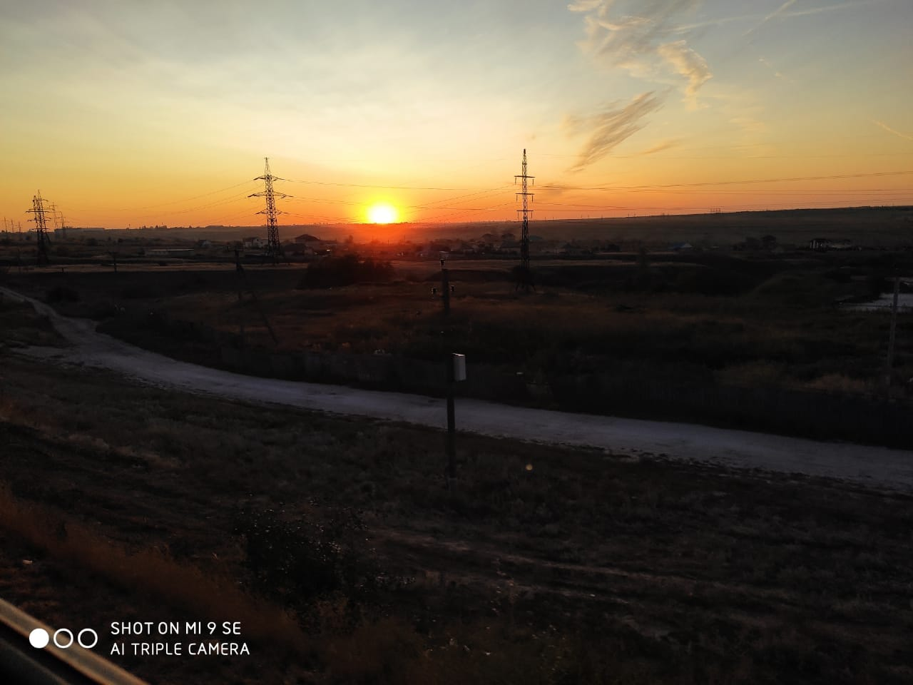

Изображение без свойства object fit растягивается по размерам блока, исходные пропорции теряются.
cover - изображение обрезается по размерам контейнера, сохраняя исходные пропорции.
contain - изображение сохраянет исходные пропорции без масшатабирования, размер подстраивается под меньшее из значений ширины или высоты.